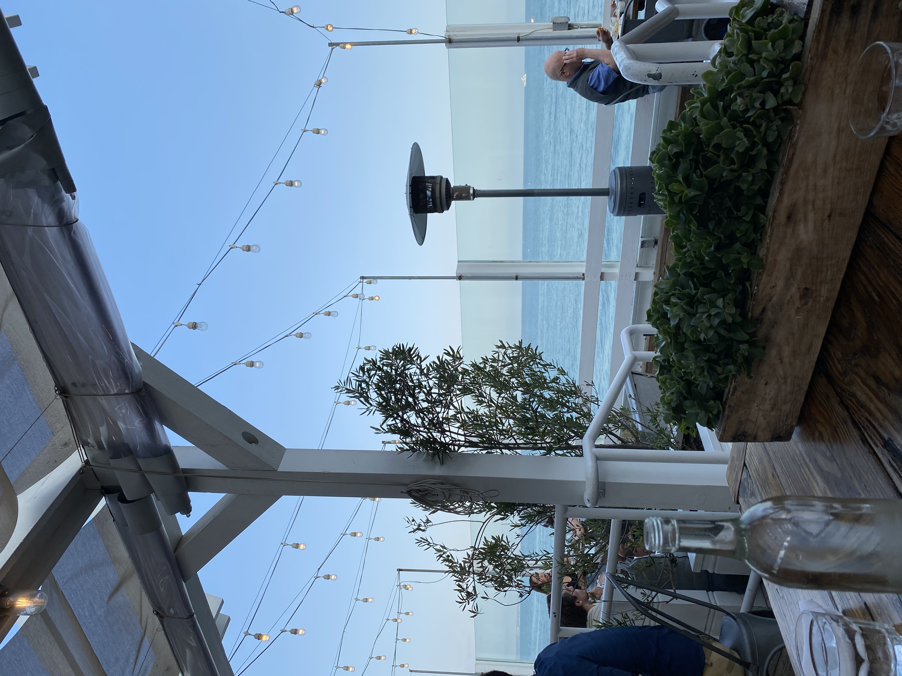

Authentic, Fresh, Fantastic, Italian Cuisine
Take a little trip to Florence, Italy and enjoy some great Italian food. These recipes have been in our family for generations and we want to share them with the world. We have multiple restaurant across the states.
"This food made me feel like I was right back in my Nonna's Kitchen. 5 stars!"-Antonio Carluccio
If you want to check out some history of Florence before you visit. Go to History of Italian Food 